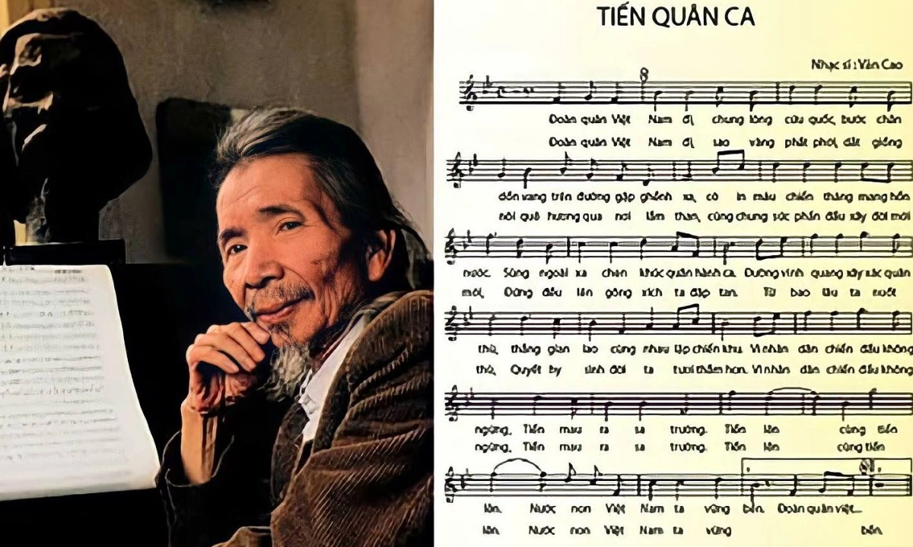
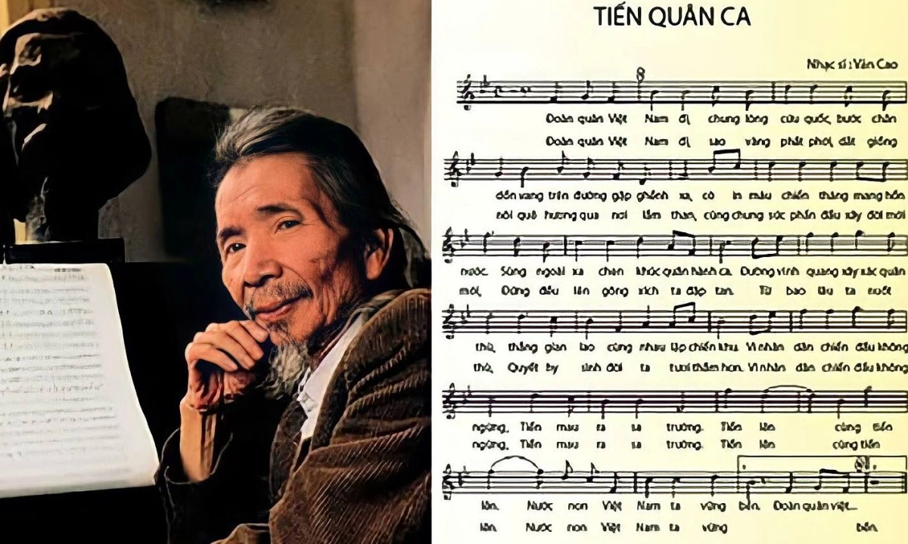

Nghệ thuật và giải trí
Tiến Quân Ca
Khúc hát thiêng liêng của những người dân Việt Nam
DÒNG CHẢY LỊCH SỬ
CỘI NGUỒN CỦA DÂN TỘC
Tài liệu mật
Điện Biên Phủ trên không - Phi công
Mỹ và “lưới lửa kinh hoàng”
Quan điểm của Đại tướng Võ Nguyên
Giáp về xây dựng Quân đội nhân dân
Việt Nam
Đại tướng Võ Nguyên Giáp là nhà quân sự kiệt xuất, vị Tổng Tư lệnh đầu tiên của lực lượng vũ trang cách mạng Việt Nam
Nghệ thuật và giải trí
Khúc hát thiêng liêng của những người dân Việt Nam
Chiến dịch Berlin (1945)

Chiến dịch Berlin (1945)
Chiến dịch Berlin (1945)
Ngày 5/6/1911 với khát vọng cháy bỏng “tìm đường đi cho dân tộc theo đi”, Người rời bến cảng Nhà Rồng, ra đi tìm đường cứu nước.
Xem thêm